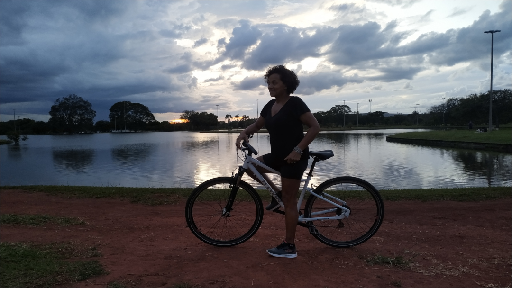

Na década de 60 meu pai viajou três vezes para trabalhar na construção de Brasília, adorava ouvir as conversas e história que ele contava. Por conta disso sempre tive curiosidade de conhecer Brasília, ouvia os relatos sobre as viagens que faziam de pau-de-arará, cada viagem chegava a durar por volta de 15 dias por estradas carroçais, na época poucas estradas eram asfaltadas. em 26 de dezembro de 2022, viajamos para lá eu e a Teresa onde ficamos até véspera de ano novo, a cidade estava bastante movimentado com os preparativos para a posse do presidente Lula dia 1 de janeiro de 2023, muitos dos departamentos públicos estavam com os acessos interditados.

Brasília vista da Torre de TV
No centro, o Eixo Monumental corta a cidade em um traço longo e reto, ladeado por importantes edifícios como a Catedral Metropolitana, com seu design impressionante em forma de coroa, e o Palácio da Alvorada, residência oficial do presidente. A arquitetura de Oscar Niemeyer e o planejamento de Lúcio Costa são claramente visíveis, com seus arranjos simétricos e amplos espaços abertos. Os lagos artificiais, como o Lago Paranoá, e os extensos parques verdes acrescentam um toque natural ao ambiente urbano, criando um contraste harmonioso entre a construção moderna e beleza natural. As superquadras residenciais aparecem como pequenas unidades organizadas, cada uma com áreas verdes e espaços comunitários, refletindo a visão de uma vida urbana integrada e eficiente. De cima, Brasília revela-se como uma cidade cuidadosamente projetada para equilibrar a funcionalidade com a estética, um marco da arquitetura e urbanismo no Brasil.
Catedral Metropolitano
A estrutura futurística, com seus 16 pilares curvos que se erguem em direção ao céu, dá a sensação de que a catedral está prestes a decolar. Esse design inovador, combinado com os vitrais coloridos, cria uma experiência visual deslumbrante tanto do lado de fora quanto do lado de dentro.
Parque Nacional
O Parque Nacional de Brasília, também conhecido como Água Mineral, é um destino fascinante para turistas que buscam a beleza natural e um refúgio tranquilo perto da capital do Brasil. Criado em 1961, o parque abrange uma área de aproximadamente 42.000 hectares, protegendo importantes ecossistemas de cerrado e oferecendo aos visitantes uma imersão na natureza. Com uma diversidade de fauna e flora, é um ótimo lugar para aqueles que apreciam a natureza e querem se desconectar da vida urbana. Com sorte, os visitantes podem avistar animais como macacos, tamanduás e uma variedade de aves. Essa interação com a vida selvagem é um ponto alto para muitos Trilhas: O parque possui várias trilhas bem sinalizadas, perfeitas para caminhadas, onde os visitantes podem observar a flora e fauna local, incluindo espécies como o lobo-guará e o tamanduá-bandeira. Piscinas Naturais: As piscinas naturais do parque são um grande destaque. Turistas adoram a água cristalina e refrescante, ideal para um mergulho nos dias quentes. Ciclismo: Algumas trilhas são adequadas para bicicletas, proporcionando um passeio ecológico.
Teresa passeando de bike no Parque da Cidade.
Parque da Cidade
O Parque da Cidade Sarah Kubitschek, em Brasília, é um dos maiores parques urbanos do mundo e uma joia para qualquer turista. O parque é imenso, com uma área de aproximadamente 420 hectares. Turistas se impressionam com os vastos gramados, os jardins bem cuidados e as árvores frondosas. É um lugar perfeito para caminhadas, piqueniques e para relaxar em meio à natureza. A infraestrutura do parque é excelente, com diversas pistas de caminhada e ciclismo, quadras esportivas, playgrounds e áreas para churrasco. Isso permite que os turistas participem de várias atividades recreativas, desde jogar futebol até andar de bicicleta ou simplesmente descansar sob uma árvore. O parque frequentemente abriga eventos culturais e esportivos, como shows, feiras e competições. Os visitantes podem se deparar com apresentações ao vivo, exposições de arte e atividades comunitárias, tornando a visita ainda mais enriquecedora. Para quem viaja com crianças, o parque oferece vários playgrounds e espaços seguros para os pequenos brincarem. Também é um lugar popular para passear com animais de estimação, fazendo com que toda a família possa aproveitar. Apesar de estar no coração da cidade, o Parque da Cidade oferece um refúgio tranquilo longe do agito urbano. Muitos turistas apreciam a paz e a tranquilidade do ambiente, onde podem se reconectar com a natureza e encontrar um pouco de serenidade. O Parque da Cidade é, sem dúvida, uma parada obrigatória para quem visita Brasília, oferecendo uma experiência completa de lazer, cultura e natureza.